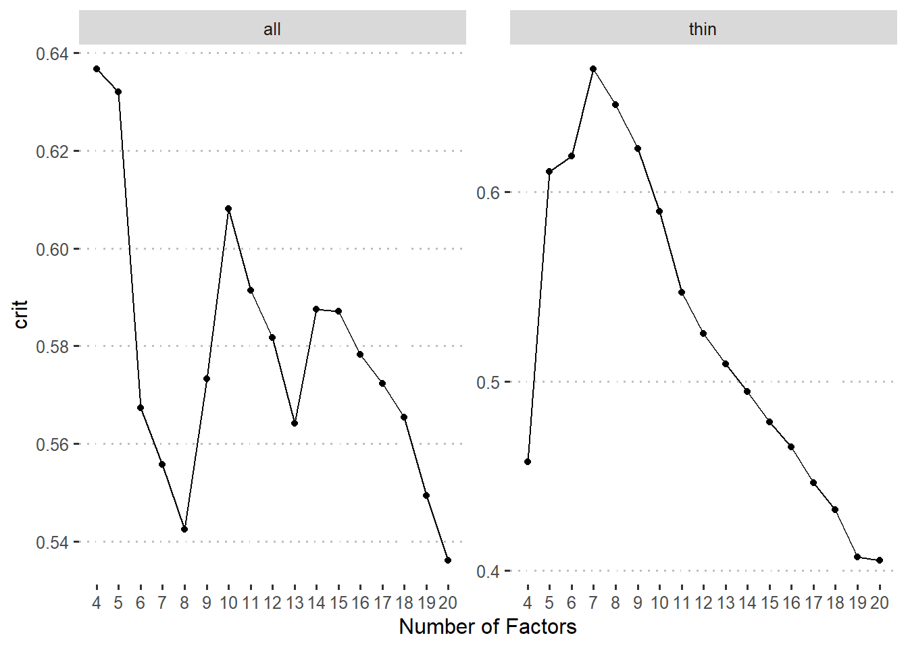
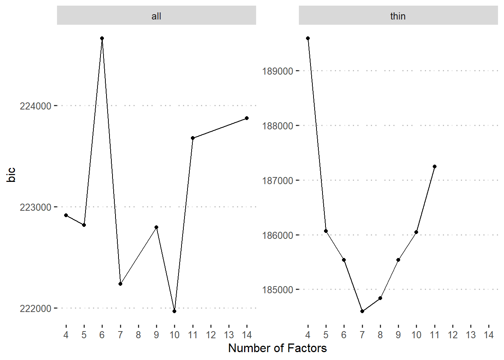
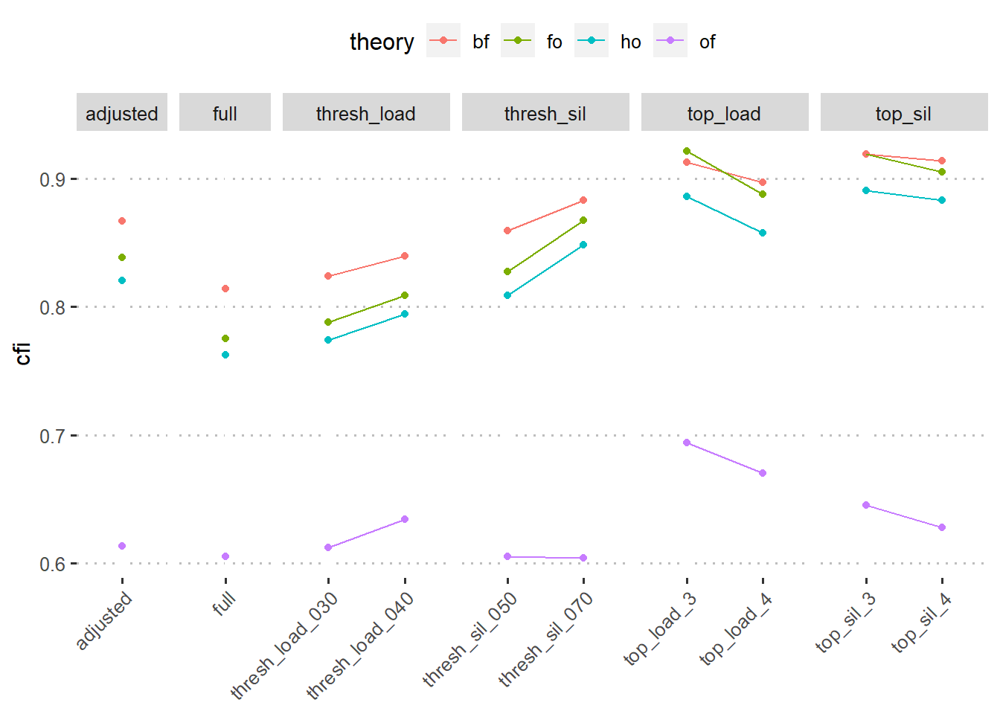
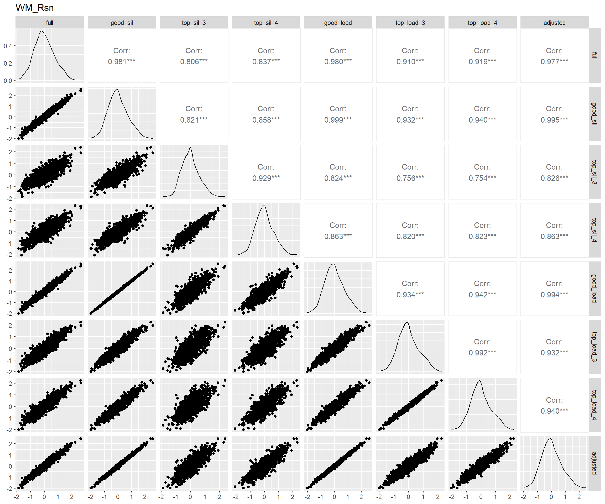
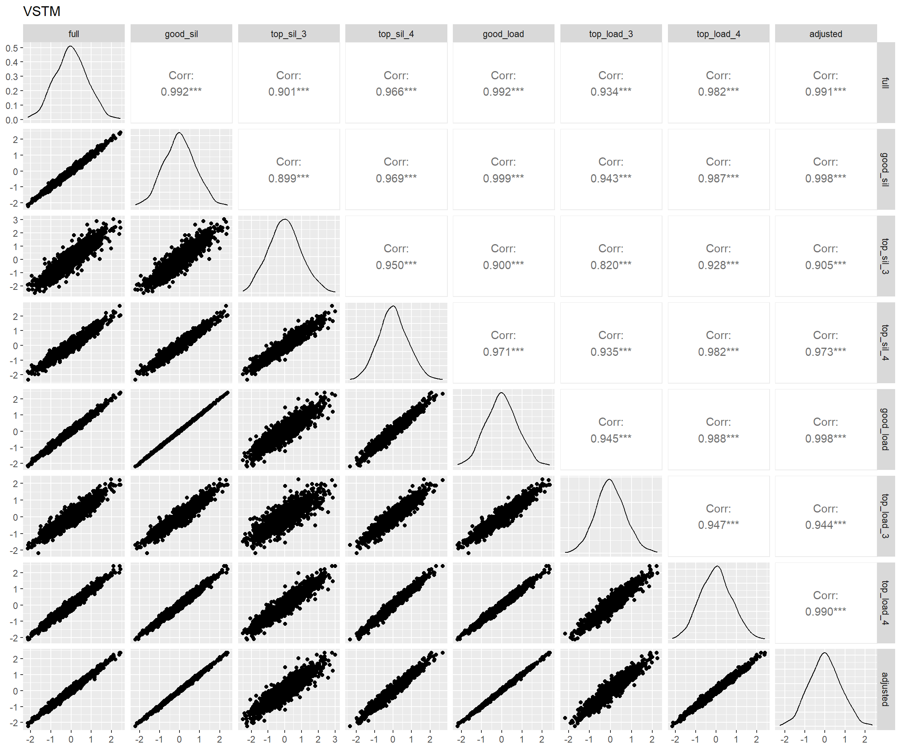

Code
devtools::load_all()
# the identifiers are large integers
requireNamespace("bit64")
requireNamespace("parameters")
projects <- targets::tar_config_yaml()devtools::load_all()
# the identifiers are large integers
requireNamespace("bit64")
requireNamespace("parameters")
projects <- targets::tar_config_yaml()我们采用了基于自助法（bootstrap）的因子聚类方法探索任务的因子归类。不过在开始之前，一些特别类似范式的任务仅保留了一个，如 表 1，其中thin一列为TRUE的是被去掉的任务。以下用all表示使用全部任务，用thin表示去掉类似范式任务的结果。
read_tsv("config/games_thin.tsv", show_col_types = FALSE) |>
filter(!is.na(same_id)) |>
mutate(thin = if_else(thin, "是", "否")) |>
select(same_id, 名称 = game_name, 是否去掉 = thin) |>
arrange(same_id, 是否去掉) |>
gt::gt(
groupname_col = "same_id",
row_group_as_column = TRUE
) |>
gtExtras::gt_highlight_rows(
rows = 是否去掉 == "是",
fill = "gray"
)| 名称 | 是否去掉 | |
|---|---|---|
| 1 | 格子卡片 | 否 |
| 美术卡片 | 是 | |
| 魔术师终极 | 是 | |
| 数字卡片PRO | 是 | |
| 文字卡片 | 是 | |
| 2 | 方向检测 | 否 |
| 色彩检测 | 是 | |
| 3 | 注意指向 | 否 |
| 太空飞船PRO | 是 | |
| 注意警觉 | 是 | |
| 4 | 速算师（中级） | 否 |
| 专注大师_中级 | 是 | |
| 5 | 宇宙黑洞A | 否 |
| 城市导航 | 是 | |
| 6 | 图形折叠 | 否 |
| 平面展开 | 是 | |
| 7 | 三维心理旋转测试A | 否 |
| 物体旋转 | 是 | |
| 8 | 语义判断 | 否 |
| 词语判断 | 是 | |
| 声调判断 | 是 |
由于因子个数对于我们的研究很重要，我们尝试了很多传统办法，结果很不稳定：
targets::tar_read(
n_factors_test_all,
store = projects$explore_factors$store
) |>
plot()
targets::tar_read(
n_factors_test_thin,
store = projects$explore_factors$store
) |>
plot()

采用基于自助法的因子聚类方法，结果如 图 2。
targets::tar_read(cluster_stats, store = projects$explore_factors$store) |>
ggplot(aes(n_fact, k, fill = crit)) +
geom_raster() +
geom_point(aes(n_fact, nc), color = "white") +
facet_wrap(~schema) +
scale_x_continuous(name = "Number of Factors", expand = c(0, 0)) +
scale_y_continuous(name = "Number of Clusters", expand = c(0, 0)) +
scale_fill_viridis_c(
name = "Silhouette Score",
breaks = scales::breaks_pretty(n = 4)
) +
theme_minimal(base_size = 16) +
theme(legend.position = "top") +
coord_fixed()
我们将每种因子个数条件的最佳聚类结果进一步用验证性因子分析确定哪个模型最佳。注意，我们可以得到每个任务指标的轮廓系数（silhouette score），并且可以用此系数来确定该任务归入对应类别的可信度。一般而言，轮廓系数大于0.51时才可靠。同时，为了保证因子分析结果的可比性，我们将轮廓系数不达标的的任务指标的载荷固定为0后做验证性因素分析。注意这样也会导致一些聚类结果中部分因子的所有成分指标载荷为0，从而导致模型不能成功拟合，也说明这种聚类结果的不可靠。
tar_load(
c(gofs, cluster_stats),
store = projects$explore_factors$store
)
stats <- cluster_stats |>
filter(k == nc) |>
full_join(gofs, by = c("schema", "n_fact"))
measures <- c("crit", "bic", "cfi", "rmsea")
for (measure in measures) {
p <- stats |>
filter(!is.na(.data[[measure]])) |>
ggplot(aes(n_fact, .data[[measure]])) +
geom_point() +
geom_line() +
scale_x_continuous(
name = "Number of Factors",
breaks = scales::breaks_width(1)
) +
facet_wrap(~ schema, scales = "free_y") +
ggpubr::theme_pubclean()
print(p)
}



进一步，根据Vuong (1989)提出的比较非嵌套模型的检验，我们也对拟合成功的模型做了两两比较。
targets::tar_read(comparison, store = projects$explore_factors$store) |>
select(left, right, everything()) |>
arrange(right) |>
gt::gt(groupname_col = "schema", row_group_as_column = TRUE) |>
gt::fmt_number(columns = !c(left, right))| left | right | omega | p_omega | p_left_better | p_right_better | |
|---|---|---|---|---|---|---|
| all | 5 | 4 | 5.62 | 0.00 | 1.00 | 0.00 |
| 6 | 4 | 9.88 | 0.00 | 1.00 | 0.00 | |
| 7 | 4 | 6.92 | 0.00 | 0.00 | 1.00 | |
| 6 | 5 | 3.75 | 0.00 | 1.00 | 0.00 | |
| 7 | 5 | 5.22 | 0.00 | 0.00 | 1.00 | |
| 7 | 6 | 5.30 | 0.00 | 0.00 | 1.00 | |
| thin | 6 | 5 | 1.37 | 0.00 | 0.00 | 1.00 |
| 7 | 5 | 3.85 | 0.00 | 0.00 | 1.00 | |
| 8 | 5 | 4.32 | 0.00 | 0.00 | 1.00 | |
| 9 | 5 | 4.32 | 0.00 | 0.00 | 1.00 | |
| 7 | 6 | 2.29 | 0.00 | 0.00 | 1.00 | |
| 8 | 6 | 2.71 | 0.00 | 0.00 | 1.00 | |
| 9 | 6 | 2.90 | 0.00 | 0.00 | 1.00 | |
| 8 | 7 | 1.28 | 0.00 | 0.99 | 0.01 | |
| 9 | 7 | 1.70 | 0.00 | 1.00 | 0.00 | |
| 9 | 8 | 0.54 | 0.00 | 1.00 | 0.00 |
因此，最终采用thin里面最佳聚类结果的模型，其具体结果如 图 4 。基于此结果我们可以比较确定地指出我们的数据可以很好地拟合一个包含七个因子的模型，根据每一个因子里面包含任务之间的关系，我们给出这些因子的名字见。
targets::tar_read(config_thin_7, store = projects$explore_factors$store) |>
separate_wider_delim(
game_index, ".",
names = c("game_name_abbr", "index_name")
) |>
mutate(
game_name = pull(
data.iquizoo::game_info,
game_name,
game_name_abbr
)[game_name_abbr]
) |>
ggplot(aes(label = game_name, size = sil_width, color = sil_width < 0.5)) +
ggwordcloud::geom_text_wordcloud() +
scale_color_grey() +
facet_wrap(~latent) +
theme_minimal()
dimensions <- read_csv("config/dimensions.csv", show_col_types = FALSE)
dimensions |>
mutate(factor = str_c("F", cluster), .keep = "unused", .before = 1L) |>
gt::gt(rowname_col = "factor")| dim_name | dim_label | |
|---|---|---|
| F1 | WM-Reasoning | WM_Rsn |
| F2 | Inhibition | Inh |
| F3 | Verbal STM | VSTM |
| F4 | Spatial STM | SSTM |
| F5 | Attention and Speed | Att_Spd |
| F6 | Episodic Memory | EM |
| F7 | Shifting | Shift |
对于以上的因子聚类结果，采用以下几个方案以寻找优化拟合指标方案：
full：每个因子内部所有成员good_sil：仅包含轮廓系数大于0.5的成员top_sil_3：仅包含轮廓系数最大三个成员top_sil_4：仅包含轮廓系数最大四个成员good_load：仅包含因子载荷大于0.4的成员（载荷基于good_sil，下同）top_load_3：仅包含因子载荷最大三个成员top_load_4：仅包含因子载荷最大四个成员图 5 给出了各种方案不同模型的拟合优度。整体上看，基于载荷或者轮廓系数选出的任务都能得到相对较好的CFI拟合指标（>0.9），我们进一步看看各种方案得到的各个潜变量得分的相关高低。
tar_read(gofs, store = projects$confirm_factors$store) |>
mutate(
name = factor(name, hypers_config_dims$name),
group = case_match(
name,
c("good_sil", "good_load", "adjusted") ~ "parsimony",
c("top_sil_3", "top_sil_4") ~ "top_sil",
c("top_load_3", "top_load_4") ~ "top_load",
.default = name
),
.after = name
) |>
ggplot(aes(name, cfi, color = theory)) +
geom_point() +
geom_line(aes(group = theory)) +
ggpubr::theme_pubclean() +
facet_grid(cols = vars(group), space = "free", scales = "free_x") +
scale_x_discrete(name = NULL)
tar_load(scores_factor, store = projects$confirm_factors$store)
factors <- c("g", dimensions$dim_label)
for (factor in factors) {
p <- scores_factor |>
filter(theory == "bf") |>
pivot_wider(
id_cols = user_id,
names_from = name,
values_from = all_of(factor)
) |>
select(-user_id) |>
GGally::ggpairs() +
ggtitle(factor)
print(p)
}



如下展示了基于adjusted方案的因子载荷：
targets::tar_read(fit_fo_adjusted, store = projects$confirm_factors$store) |>
parameters::model_parameters(component = "loading") |>
as_tibble() |>
separate_wider_delim(
From, ".",
names = c("game_name_abbr", "index_name")
) |>
left_join(data.iquizoo::game_info, by = "game_name_abbr") |>
left_join(
targets::tar_read(
test_retest,
store = projects$prepare_source_data_retest$store
) |>
filter(origin == "rm_out"),
by = join_by(game_id, index_name)
) |>
mutate(Dimension = as_factor(To)) |>
select(
Dimension,
`Game Name` = game_name,
`Index Name` = index_name,
Loading = Coefficient,
ICC = icc
) |>
arrange(Dimension, desc(Loading)) |>
gt::gt(
groupname_col = "Dimension",
row_group_as_column = TRUE
)| Game Name | Index Name | Loading | ICC | |
|---|---|---|---|---|
| WM_Rsn | 三维心理旋转测试A | nc | 0.7236670 | 0.7091315 |
| 图形折叠 | nc | 0.6961593 | 0.6860115 | |
| 图形推理 | nc | 0.6617684 | 0.4941794 | |
| 格子卡片 | dprime | 0.6347278 | 0.6359423 | |
| 视角判断 | nc | 0.5905437 | 0.5800200 | |
| 登陆月球（中级） | mean_log_err | 0.5823957 | 0.6128001 | |
| 数字推理 | nc | 0.5445832 | 0.5674540 | |
| 阅读判断 | nc | 0.3968382 | 0.5144023 | |
| Inh | 候鸟迁徙PRO | cong_eff_ies | 0.6356835 | 0.6953626 |
| 捉虫高级简版 | dprime | 0.5355256 | 0.3996592 | |
| 方向检测 | k | 0.5268594 | 0.3174755 | |
| 多彩文字PRO | cong_eff_ies | 0.4292963 | 0.5645885 | |
| 变色魔块PRO | ssrt | 0.4088987 | 0.5516098 | |
| VSTM | 幸运小球PRO | nc | 0.7207439 | 0.5658720 |
| 井然有序 | nc | 0.6677159 | 0.4969166 | |
| 顺背数PRO | nc | 0.6450782 | 0.6340612 | |
| 密码箱 | nc | 0.5991756 | 0.4504140 | |
| SSTM | 蝴蝶照相机 | nc | 0.7745221 | 0.6622464 |
| 位置记忆PRO | nc | 0.6871923 | 0.6388553 | |
| 打靶场 | nc | 0.6583435 | 0.4946694 | |
| 路径学习 | nc | 0.5507501 | 0.3010715 | |
| 萤火虫PRO | nc | 0.5014007 | 0.5986120 | |
| Att_Spd | 快速归类PRO | ies | 0.6710949 | 0.5946463 |
| 变戏法 | ies | 0.6584507 | 0.5200595 | |
| 一心二用PRO | nc | 0.6433522 | 0.5032728 | |
| 小狗回家 | mean_score | 0.5925330 | 0.6061863 | |
| 火眼金睛 | nc | 0.5225368 | 0.6036382 | |
| 我是大厨 | score_total | 0.5099937 | 0.2392425 | |
| 连点成画PRO | nc | 0.4522231 | 0.5265635 | |
| 方向临摹 | mean_log_err | 0.2781160 | 0.5898830 | |
| EM | 万花筒 | nc | 0.6628574 | 0.6092568 |
| 词汇学习 | nc | 0.6434415 | 0.3723588 | |
| 过目不忘PRO | nc | 0.6240491 | 0.6004452 | |
| 欢乐餐厅PRO | nc | 0.6185724 | 0.5162227 | |
| 社交达人 | fntotal | 0.5833142 | 0.4827007 | |
| 宇宙黑洞A | nc | 0.5798852 | 0.6075916 | |
| 事件记忆 | nc | 0.5668869 | 0.5468560 | |
| 人工语言-高级 | nc | 0.5384646 | 0.2651027 | |
| 图片记忆A | bps_score | 0.5092579 | 0.4905354 | |
| 连续再认PRO | dprime | 0.5026647 | 0.6425060 | |
| 视觉记忆测试 | nc | 0.4915874 | 0.6060116 | |
| Shift | 多变计数师 | switch_cost_ies | 0.5401856 | 0.4726218 |
| 随机应变 | switch_cost_ies | 0.5400177 | 0.5841394 | |
| 察颜观色PRO | switch_cost_ies | 0.5193547 | 0.5667099 | |
| 候鸟迁徙PRO | switch_cost_ies | 0.3660874 | 0.4911534 |
原则：在总时长一样的情况下，如何以最高的准确性测量一般智力和各个子能力维度？
重点比较：
查看ResearchGate上的一个讨论确定这标准来源。↩︎